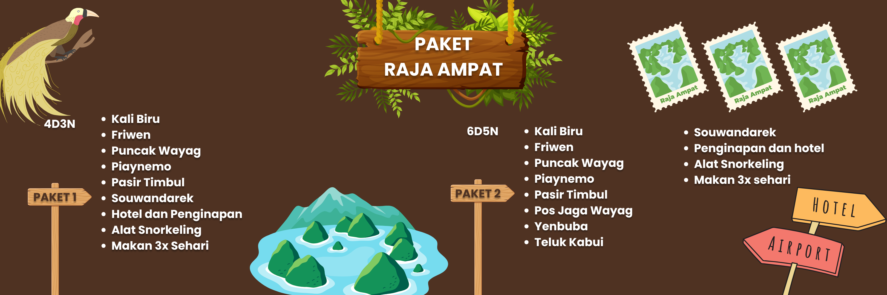

Raja Ampat yang terletak di Papua Barat, menawarkan kekayaan alam, flora dan fauna, budaya, kesenian, dan keindahan alam bawah laut.
Kepulauan Raja Ampat merupakan tempat yang sangat berpotensi untuk dijadikan sebagai objek wisata, terutama wisata penyelaman. Perairan Kepulauan Raja Ampat menurut berbagai sumber, merupakan salah satu dari 10 perairan terbaik untuk diving site di seluruh dunia. Bahkan, mungkin juga diakui sebagai nomor satu untuk kelengkapan flora dan fauna bawah air pada saat ini.
Raja Ampat dapat dicapai dengan pesawat dari Jakarta atau Bali ke Sorong via Makassar atau Ambon dan Manado. Penerbangan memakan waktu kurang lebih 6 jam.
Kebanyakan wisatawan yang datang ke Raja Ampat saat ini adalah para penyelam. Untuk yang bukan penyelam ada sejumlah pantai berpasir putih, gugusan pulau karst dan flora dan fauna endemik seperti cendrawasih merah, cendrawasih Wilson, maleo waigeo, beraneka burung kakatua dan nuri, kuskus waigeo, serta beragam jenis anggrek.

| Harga | Jumlah |
|---|---|
| Rp. 7.000.000/Px | 10 Px |
| Rp. 7.250.000/Px | 5 Px |
| Rp. 7.500.000/Px | 4 Px |
| Rp. 7.850.000/Px | 3 Px |
| Rp. 8.000.000/Px | 2 Px |